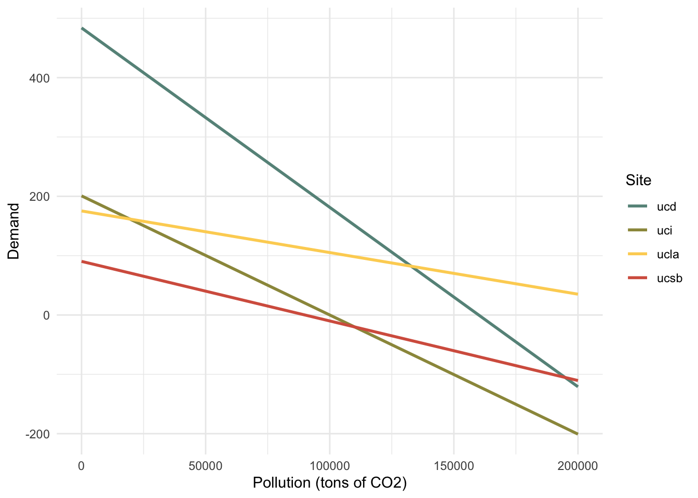

In this homework you will be simulating alternative approaches for reducing carbon emissions among four UC campuses (UCSB, UCLA, UCI, and UCD). The dataset for this assignment is available in the file “CarbonUC.csv”, available on Canvas. The dataset contains estimates of the marginal cost of reducing carbon emission for each campus for different levels of abatement (in tons of carbon). A few notes: ● Current (i.e. baseline) emission for each campus are: UCSB = 90,000 tons, UCLA = 250,000 tons, UCI = 100,000 tons, UCD = 160,000 tons. ● Prices are in $/ton and quantities are in tons of CO2. ● Before opening R, I recommend drawing graphs by hand to make sure you know what you want to do Please answer the following questions:
Rows: 201 Columns: 5
── Column specification ────────────────────────────────────────────────────────
Delimiter: ","
dbl (5): Abatement, UCSB, UCLA, UCI, UCD
ℹ Use `spec()` to retrieve the full column specification for this data.
ℹ Specify the column types or set `show_col_types = FALSE` to quiet this message.
#define baseline emissions (all in tons)ucsb_baseline =90000ucla_baseline =250000uci_baseline =100000ucd_baseline =160000
For each campus, plot the marginal abatement cost data and estimate a linear regression model with zero intercept.1 These estimated linear regressions will be your estimates of the marginal abatement cost curve for each campus, which you will use for the remainder of this analysis. Write the equation for the marginal abatement cost curve for each campus.
#plot marginal abatement curvesplot_1 =ggplot(emissions, aes(x = abatement, y = reduction, color = site)) +geom_jitter() +geom_smooth() +scale_colour_manual(values =c("#679289","#9C964A","#FDD262","#D6604D"))+labs(title =" UC Marginal Abatement Cost (MAC) for Carbon ", y ="$/ton of carbon", x ="Tons of carbon abated") +theme_minimal() plot_1
`geom_smooth()` using method = 'loess' and formula = 'y ~ x'
#filter data by site, estimate linear regression models with a forced 0 intercept, and extract slopes from lmsucsb_df = emissions %>%filter(site =="ucsb")ucsb_lm =lm(reduction ~0+ abatement, data = ucsb_df) ucsb_slope = ucsb_lm$coefficient[1] %>%as.numeric()ucla_df = emissions %>%filter(site =="ucla")ucla_lm =lm(reduction ~0+ abatement, data = ucla_df) ucla_slope = ucla_lm$coefficient[1] %>%as.numeric()uci_df = emissions %>%filter(site =="uci")uci_lm =lm(reduction ~0+ abatement, data = uci_df) uci_slope = uci_lm$coefficient[1] %>%as.numeric()ucd_df = emissions %>%filter(site =="ucd")ucd_lm =lm(reduction ~0+ abatement, data = ucd_df) ucd_slope = ucd_lm$coefficient[1] %>%as.numeric()#add baselines and slopes to full dfemissions_mod = emissions %>%mutate(baseline =case_when( site =='ucsb'~ ucsb_baseline, site =='ucla'~ ucla_baseline, site =='uci'~ uci_baseline, site =='ucd'~ ucd_baseline),slope =case_when( site =='ucsb'~ ucsb_slope, site =='ucla'~ ucla_slope, site =='uci'~ uci_slope, site =='ucd'~ ucd_slope))
#write out the MAC equationsequatiomatic::extract_eq(ucsb_lm, use_coefs =TRUE, coef_digits =8)
Using your estimated marginal abatement cost curves, together with the baseline emissions, derive each campus’ demand curve for carbon. In other words, how much would each campus be willing to pay to emit the first ton of carbon, the second ton of carbon, etc. 2 Plot each campus’ demand curve for emissions on a single graph. Which campus is willing to pay the most for the first ton of carbon emissions?
UCD is willing to pay the most for the first ton of carbon emissions.
#define generic demand functioncompute_demand_P =function(slope, baseline, emissions){ demand = slope*(baseline - emissions)return(demand)}#apply demand function and save results in main dfemissions_mod = emissions_mod %>%mutate(demand =compute_demand_P(slope, baseline, abatement))#create linear models of demand (not necessary)ucsb_d_df = emissions_mod %>%filter(site =="ucsb")ucsb_d_lm <-lm(demand ~ abatement, data = ucsb_d_df)ucla_d_df = emissions_mod %>%filter(site =="ucla")ucla_d_lm <-lm(demand ~ abatement, data = ucla_d_df)uci_d_df = emissions_mod %>%filter(site =="uci")uci_d_lm <-lm(demand ~ abatement, data = uci_d_df)ucd_d_df = emissions_mod %>%filter(site =="ucd")ucd_d_lm <-lm(demand ~ abatement, data = ucd_d_df)
#plot demand curve for all sitesplot_2 =ggplot(emissions_mod, aes(x = abatement, y = demand, color = site)) +geom_line(size =1)+scale_colour_manual(values =c("#679289","#9C964A","#FDD262","#D6604D"))+labs(x ="Pollution (tons of CO2)", y ="Demand", color ="Site") +theme_minimal() +theme()
Warning: Using `size` aesthetic for lines was deprecated in ggplot2 3.4.0.
ℹ Please use `linewidth` instead.
plot_2

Here you will analyze three alternative interventions for reducing carbon emissions across these four campuses. Please answer the questions about each intervention listed below.
Intervention #1: Carbon Tax: Each campus must pay a tax of $50/ton for each ton of emissions. How much would each campus choose to emit? How much would each campus abate? What is the total amount of emissions across all four campuses? How much tax revenue is generated?
#define generic function to calculate demand Qcompute_demand_Q =function(slope, baseline, price){ Q = baseline - ((price)/(slope))return(Q)}#define generic function to calculate abatement Qcompute_abatement_Q =function(baseline, emit_Q){ abatement_Q = baseline - emit_Qreturn(abatement_Q)}ucsb_emit_Q =compute_demand_Q(ucsb_slope, ucsb_baseline, price =50)ucsb_abate_Q =compute_abatement_Q(ucsb_baseline, ucsb_emit_Q)results =paste0("Under intervention #1, UCSB will emit " , ucsb_emit_Q, " tons of carbon and abate ", ucsb_abate_Q, " tons of carbon.")print(results)
[1] "Under intervention #1, UCSB will emit 40209.1909084787 tons of carbon and abate 49790.8090915213 tons of carbon."
ucla_emit_Q =compute_demand_Q(ucla_slope, ucla_baseline, price =50)ucla_abate_Q =compute_abatement_Q(ucla_baseline, ucla_emit_Q)results =paste0("Under intervention #1, UCLA will emit " , ucla_emit_Q, " tons of carbon and abate ", ucla_abate_Q, " tons of carbon.")print(results)
[1] "Under intervention #1, UCLA will emit 178717.531983001 tons of carbon and abate 71282.4680169989 tons of carbon."
ucd_emit_Q =compute_demand_Q(ucd_slope, ucd_baseline, price =50)ucd_abate_Q =compute_abatement_Q(ucd_baseline, ucd_emit_Q)results =paste0("Under intervention #1, UCD will emit " , ucd_emit_Q, " tons of carbon and abate ", ucd_abate_Q, " tons of carbon.")print(results)
[1] "Under intervention #1, UCD will emit 143466.384978117 tons of carbon and abate 16533.6150218829 tons of carbon."
uci_emit_Q =compute_demand_Q(uci_slope, uci_baseline, price =50)uci_abate_Q =compute_abatement_Q(uci_baseline, uci_emit_Q)results =paste0("Under intervention #1, UCI will emit " , uci_emit_Q, " tons of carbon and abate ", uci_abate_Q, " tons of carbon.")print(results)
[1] "Under intervention #1, UCI will emit 75096.2390467848 tons of carbon and abate 24903.7609532152 tons of carbon."
total_emitted <- ucsb_emit_Q + ucla_emit_Q + uci_emit_Q + ucd_emit_Qtotal_revenue <- total_emitted*50results =paste0("Under intervention #1, the four campuses will emit a total of" , total_emitted, " tons of carbon and generate $", total_revenue, " in tax revenue.")print(results)
[1] "Under intervention #1, the four campuses will emit a total of437489.346916382 tons of carbon and generate $21874467.3458191 in tax revenue."
Intervention #2: Carbon Ban: Carbon emissions are banned at each campus. What is the total cost of this ban to each campus?
Intervention #3: Cap without Trade: Each campus is capped at 100,000 tons of carbon. How much abatement would be required by each campus to comply with this cap? What is the marginal cost of the last unit of abatement for each campus? What is the total cost of abatement for each campus to comply with this new cap?
Intervention #4: Cap with Trade: Suppose each campus is capped at 100,000 tons of carbon, but trade is allowed. With trade, total emissions will be 400,000 but some campuses may emit more or less than 100,000. How much would each campus end up emitting after trade? What is the equilibrium trading price of carbon permits? For each campus, calculate whether they are a buyer or a seller of permits.
The central campus decides to go with the “Cap with Trade” approach (Scenario 3d above). An altruistic philanthropist buys 50,000 of the permits from the cap and trade market and retires them (i.e. not emit the carbon), so only 350,000 tons will be emitted. What is the new trading price among the four campuses? How much will it cost the philanthropist to buy and retire these permits?
1 I recommend using the function “lm” (as in “linear model”) in R. 2 Hint: You can use this equation for the demand for emissions: P(Emissions) = aBaseline – aEmissions, where a is your estimated slope of the marginal cost curve.
Kristin’s notes (lots of incorrect things in chunks below here)
# #plot marginal abatement cost curves# plot_0 = emissions %>%# filter(site == "ucsb") %>%# ggplot(aes(x = reduction, y = abatement)) +# geom_point() +# geom_smooth(method = 'lm', se = FALSE, color = "coral") +# stat_regline_equation(label.y = 185000, aes(label = ..eq.label.., color = 'coral'))+# labs(x = "Abatement (tons of CO2)", y = "Marginal Cost ($ per ton of CO2)") +# theme_minimal() +# theme(legend.position = 'none')# # plot_0# # plot_1 = emissions %>%# filter(site == "ucla") %>%# ggplot(aes(x = reduction, y = abatement)) +# geom_point() +# geom_smooth(method = 'lm', se = FALSE, color = "goldenrod") +# stat_regline_equation(label.y = 185000, aes(label = ..eq.label.., color = 'goldenrod'))+# labs(x = "Abatement (tons of CO2)", y = "Marginal Cost ($ per ton of CO2)") +# theme_minimal() +# theme(legend.position = 'none')# # plot_1# # plot_2 = emissions %>%# filter(site == "uci") %>%# ggplot(aes(x = reduction, y = abatement)) +# geom_point() +# geom_smooth(method = 'lm', se = FALSE, color = "goldenrod") +# stat_regline_equation(label.y = 185000, aes(label = ..eq.label.., color = 'goldenrod'))+# labs(x = "Abatement (tons of CO2)", y = "Marginal Cost ($ per ton of CO2)") +# theme_minimal() +# theme(legend.position = 'none')# # plot_2# # plot_3 = emissions %>%# filter(site == "ucd") %>%# ggplot(aes(x = reduction, y = abatement)) +# geom_point() +# geom_smooth(method = 'lm', se = FALSE, color = "goldenrod") +# stat_regline_equation(label.y = 185000, aes(label = ..eq.label.., color = 'goldenrod'))+# labs(x = "Abatement (tons of CO2)", y = "Marginal Cost ($ per ton of CO2)") +# theme_minimal() +# theme(legend.position = 'none')# # plot_3